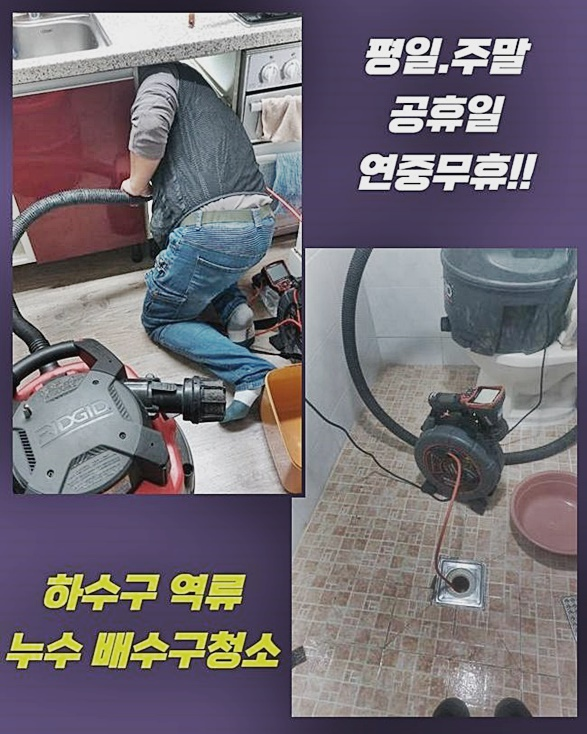
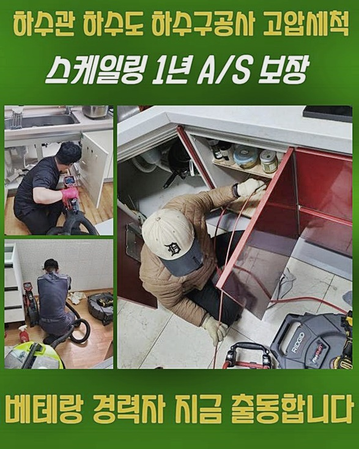
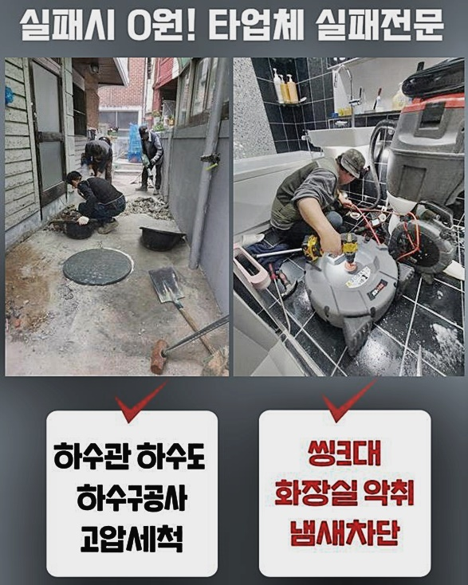
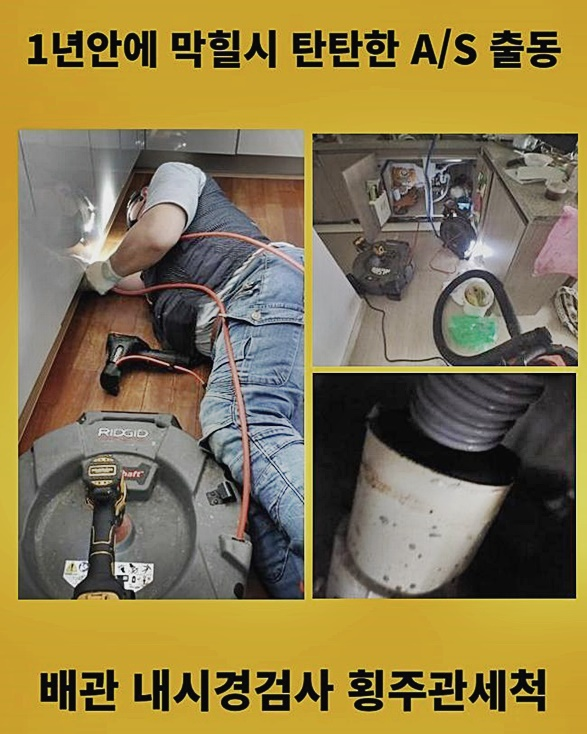
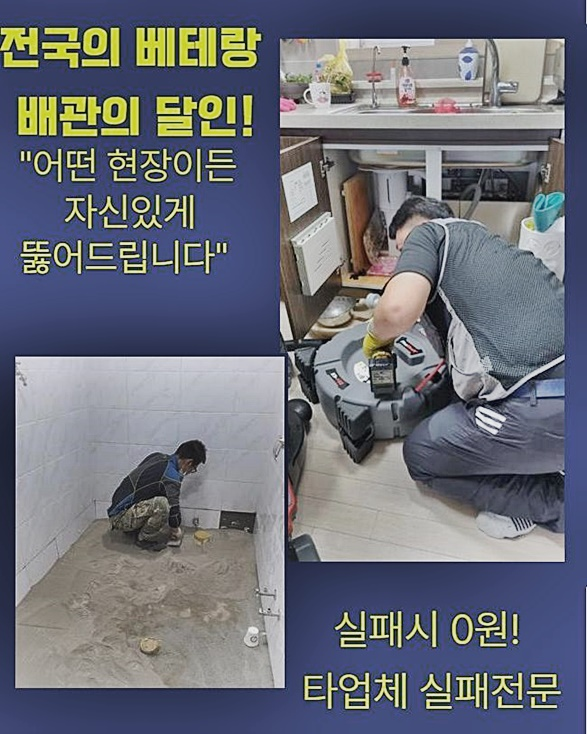

🏠 하남 망월동싱크대배수구역류 초일동 배수구뚫기 출장설비
서울 구로구 싱크대막힘 전문 시공 후기

📋 작업 개요
- 위치: 서울 구로구, 구로구, 서울
- 서비스 유형: 싱크대막힘, 하수구막힘, 배관막힘, 역류해결, 뚫는업체, 배관청소, 고압세척
- 작업 일시: 2024. 7. 19. 18:56
- 업체명: 하수구수사대 (010-5615-2118)
🔍 문제 상황
하남 망월동싱크대배수구역류 초일동 배수구뚫기 출장설비
안녕하십니까!! 의뢰자의 생활측면을 저해시키는 시스템적 결함들을 빠르고 꼼꼼하게 해결하고있는 전문업체랍니다
지금부터 생활하시면서 집내부서 야기되는 배관결함과 관련하여 설명드릴게요
어째서 이런 문제들이 벌어지는걸까요?
이런 문제들로 대해 저희전문진이 안내하는 내용의 글로 적어보았어요
저희전문진이 찾아갔던 장소에서는 물이 안내려갈때 대개 잠깐의 증세들로 치부하여 펄펄 끓고있는 물들을 쏟아내 물빠짐 문제들을 없애기위해서 노력하시는데요
기름들이 축적되어 발생한 증상임을 들어 실시하였으나
그도 잠시 잠시동안엔 빠지다가 또 막히게되며 역류까지 야기되었어요
관찰하고서 자가적인 방법은 효과가없다 생각하셨던 의뢰인분은 해당 증상들을 고쳐내는 저희업체께 의뢰하셨고 저희전문진은 안전하게 고민을 해결했어야했죠
고객분의 요구에 걸맞게 1시간안팎으로 도착했죠
하수관에서 솟구치는 모습을 목도하시곤 서둘러 관련 부품을 빼내고 바닥배관을 살펴보았어요
열자마자 굳게된 기름때와 부유물들과 더불어 하수도의 입구부분에 고인 오수는 깊은곳까지 점검해봐야 하는것을 알려줬습니다

🔎 원인 분석
💡 전문가 진단: 정밀 진단 장비를 사용하여 슬러지의 고착 여부를 판명하고 타격/세척 작업을 실시했습니다.
1차적으로 다기능을 대표하는 석션장비로 내측의 오수와 잔재들을 빨아냈는데요
잔해들이 배출되었지만 그 양상을 확인하니 문제의 주범으로 자리잡을 양이 아니였어요
때문에 저희의경우엔 더 깊은 곳에 문제들이 존재하는것으로 판단하고구석구석 육안으로 보여주는 내시경단계를 가용해보았습니다
깊은 지점들까지 내시경장치를 삽입해통수오류의 원인과 어느구간에 장애가 결집되어있는건지 살펴보았는데요
내시경이용은 진단시에만 쓰는게아닌 작업후의 테스트를 위한 때에도 반드시 필요합니다
하수구 막힘 불편들을 없앨 목적으로 한다면, 해당 장비들을 가지고있는 전문가를 부르는게 합리적인 선택입니다
저희의경우엔 타 업체들에서 손을 놓은 장소로부터도 문의가 많은데요
때때로 금액적 측면으로 인해 간단한 자가조치들에 의존하는 분들도 있으신데요
물론 금액도 중요시 되나 배수관 오류의 재발률을 배제하시면 안됩니다
제때 해결을 안한다면 접촉지점 자체가 벌어지게되며 하수가 새어버리는 더 큰 피해를 발생시키게 만듭니다
때문에 간소하게 수리될 가능성이 있는지 내시경장비로.내시경기기로 꼼꼼하게 체크해보고 작업들에 집중하는것이 대두되는데 점진적으로 접근해야 효과가 뛰어나고 재발 위험성없이 청결하게 뚫는 작업이 이뤄진답니다
저희의경우엔 다양한 통수오류 사안과 밀접한 전문성과 노하우들을 가지고있는 배관 해결사입니다

🔧 작업 과정
고객의 주거지를 오염되지않고 보건적으로 지낼 수 있게 이를 중요한 가치로 삼고 만족감을 지원하고 있습니다
문제들이 발생했다면 편하게 저희께 전화해보세요!
전문성을 갖추고 여러분들의 집을 복구시켜 드리고 이전의 생활로 되돌려놓을것을 보장해드려요
내시경기기로 깊숙한 부분을 확인했더니 기름으로 오염이 심했던 것으로 파악되었어요
크기들이 상당했기에 석션기기로 해결할 수 없었던 기조를 파악해보았습니다
내측에 존재하는 큰 잔해물을 제거하려면 샤프트장비라 불리고있는 도구들을 써줘야했는데요
장치를 써서 잔해물을 조그마하게 제거한 뒤 석션장치로 청소해줍니다
회전하고 있는 앞코의 노커들이 이물들을 쉽게 해체하고 분쇄해, 각 라인을 깨끗히 세척하는 역할들을 하는데요
작업들을 이어나가다가 단계를 중단한 채 체크하니 샤프트 머리쪽 체인에는 기름이 가득한 오염물들이 많았던 모습이였습니다
이로인해 내부 문제가 좋지않음을 뜻하며 배관 관리를 철저하게 진행해주어야 하는것을 뜻합니다
반복적으로 내시경장치로 지금의 위치를 관찰하고서 이물들이 슬러지화 된 큰걸 확인해주고 분쇄 내부 상황을 진행해주는데 몰두했죠
석션장치로 음식물 이물들을 반복해서 흡입해주어 제거했으며 안측을 깨끗히 정리해주었어요
금일에는 딱딱한 오염물들이 상당했기에 현재의 모습을 이곳저곳 반복했는데요
이처럼 하수구 막힘 문제들을 시정하는 저희 업체에서는, 증세를 악화시키는 잔해물질이 잠잠해질때까지 꾸준히 뚫는 현 상태를 거듭했어요
내시경장치로 내측이 본래의 모습을 되찾은걸 확인했습니다
배출되어 모여진 잔해물이 그 증거들이였어요
이것처럼 많은 양이 존재하는 상태에서는 증상들이 사라지지않아요
해당 이유로 오염원을 제대로 청소하는게 중요하게 자리잡았고 일방적으로 석션도구만 해결을 꾀하는건 일시적으로만 효과가있고 얼마못가 증상들을 불러오게하는데요
말끔해진 배관상태를 내시경장비로 체크했음에도 불구하고 작업을 하고 배수구로 수도를 쏟아붓는 통수검열을 실시해주었어요
이 과정들을 진행하며 배수관 물막힘증세가 야기된것은 아닌건지 세심하게 확인해주었고 그로인해 이상현상없이 하수들의 통수들이 조속하게 진행되었어요


✅ 작업 완료
저희의 전문가들은 배수관련 이유를 상세하게 진단하고 고객의 집에 적절한 해결책을 제공하고 있는데요
앞서 발생된 유사한 하수구 막힘 결함들이 다시금 생기지않게끔 배수관을 말끔하게 바로 잡았습니다
하수구 내시경 렌즈를 이용해서 청소과정들과 철수하기 이전에 검수과정들도 고객분이 이해하시게끔 도와드렸어요
이처럼 어려운 하수도가 막혀버리는 문제들에 빠져버렸다면 언제라도 저희에게 연락주시면 되요
저희전문진은 의뢰자의 문제들을 빠르게 없애도록 모든 실력과 노하우를 동원할 능력을 갖추고있어요!



⚠️ 주방 싱크대 배관 막힘 예방 수칙
- ✅ 기름기가 묻은 식기나 프라이팬은 설거지 전 키친타올로 반드시 기름때를 닦아내세요.
- ✅ 주기적으로 싱크대 개수대에 뜨거운 물을 가득 받아 한 번에 내려 배관 내부 기름을 씻어내세요.
- ✅ 배수구 거름망을 미세한 필터로 사용하시고 음식물 찌꺼기가 틈으로 새어 들지 않게 관리하세요.
- ✅ 베이킹소다와 식초를 뜨거운 물과 함께 일주일에 한 번씩 부어주면 배관 살균과 막힘 예방에 좋습니다.
💡 핵심 정리
- 확실한 장비 작업(내시경 점검 및 샤프트 스케일링)으로 원인을 뿌리 뽑습니다.
- 작업 후 1년 이내에 동일한 부위 재발 시 100% 무상 A/S 서비스를 보장합니다.
- 서울 · 경기 · 인천 전 지역에 24시간 언제든 긴급 출동할 수 있도록 항시 대기 중입니다.
❓ 자주 묻는 질문 (FAQ)
🚨 서울 구로구 싱크대막힘 문제로 고민이신가요?
정확한 원인 진단과 확실한 시공으로 재발 없는 해결을 약속드립니다.
24시간 긴급 출동 | 서울 · 경기 · 인천 전지역 | 1년 내 재발 시 무상 A/S